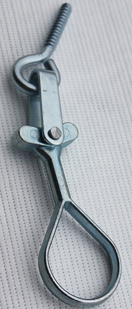
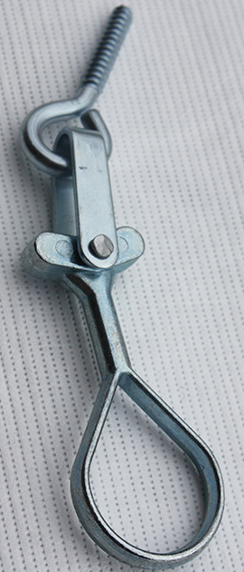
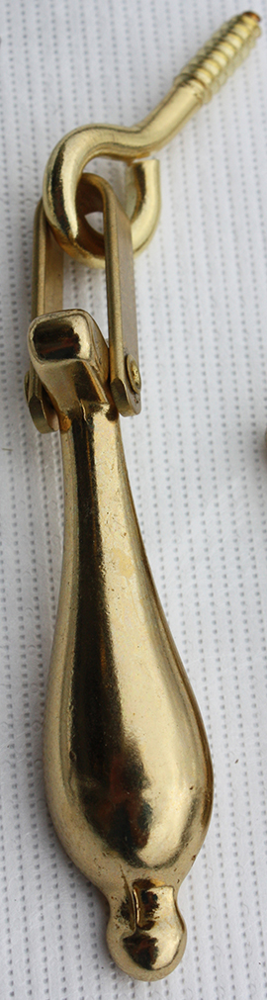
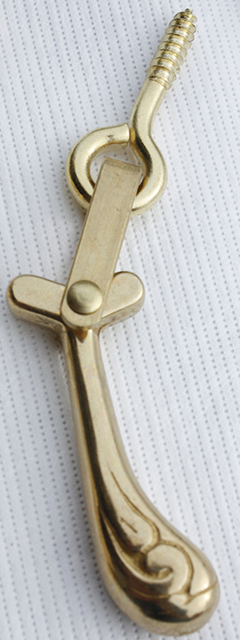
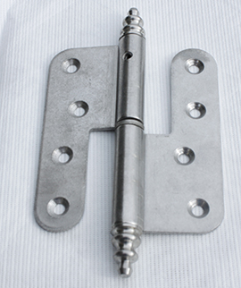
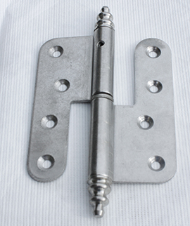

Vridere og beslag
Røros Isoler Sidehengslet leveres standard med blank vrider.

Kan bestilles med hasper i ulike utførelser og farger.
 


Haspe 175 i 4 ulike farger: Gulkrom, krom, hvit, sort.
Haspe 1324 (dråpehaspe) i messing og krom.
Hasper MP380 i messing.
Hengsel leveres standard i elforsinket blank uten knopp.
Fargemuligheter: Blank, hvit og sort. I tillegg kan hengsler leveres i rustfri utførelse.
(Bildenavn: hengsel krom uten tapp , hengsel sort uten tapp, hengsel hvit tapp,)
Kan også leveres med pynteknopp på forespørsel. Fargemuligheter: Blank,hvit og sort. I tillegg kan hengsler leveres i rustfri utførelse.
 

Vi leverer stormkrok som el forsinket.
 (bildenavn: Stormkrok umontert)
Stormkroker kan også leveres i en annen utførelse og fargeutvalg
S- Stormkrok
Farger: Gull, sort og hvit
(Bildenavn: Stormkrok felles)
Sikkerhetsstormkrok: Stormkroker kan også leveres som sikkerhetsstormkrok i hvit eller gulkrom
(Bildenavn: PN3850 Sikkerhet)
Ventiler
Røros Vinduet Isoler leveres uten ventil som standard. Kan leveres på forespørsel
(Bildenavn: Ventildeksel) på bestilling
(bildenavn: Stormkrok umontert)
Stormkroker kan også leveres i en annen utførelse og fargeutvalg
S- Stormkrok
Farger: Gull, sort og hvit
(Bildenavn: Stormkrok felles)
Sikkerhetsstormkrok: Stormkroker kan også leveres som sikkerhetsstormkrok i hvit eller gulkrom
(Bildenavn: PN3850 Sikkerhet)
Ventiler
Røros Vinduet Isoler leveres uten ventil som standard. Kan leveres på forespørsel
(Bildenavn: Ventildeksel) på bestilling